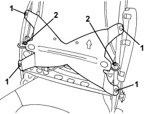
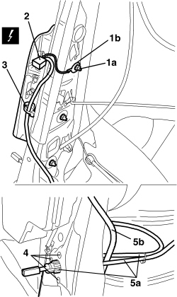

7045A38 DRIVER'S SEAT BACKREST LUMBAR ADJUSTMENT DEVICE - R.R WITH SEAT REMOVED
- Path
- Procedures > 70 FITTINGS > 7045 FRONT SEATS > 7045A FRONT SEAT ASSEMBLY > 7045A38 DRIVER'S SEAT BACKREST LUMBAR ADJUSTMENT DEVICE - R.R WITH SEAT REMOVED
- Kind
- repair procedure (removal / refitting; the operation number is the code)
- Applies to
- all engines; all production periods
- Interactive page
- https://sloeber94.github.io/elrnDB-aBrrSpdr/en/#/946004139
Applies to: all engines; all production periods
 Removing
Removing
 Refitting
RefittingOp. 7045A25 FRONT SEAT BACKREST LUMBAR ADJUSTMENT KNOB (ONE), LEFT OR RIGHT - R.R.
Op. 7045D31 FRONT SEAT BACKREST COVER, LEFT OR RIGHT - R.R. WITH SEAT REMOVED
1. Remove the rivets securing the lumbar band using a drill.
2. Disconect the cable terminals from the retainers.

Applies to: all engines; all production periods
1. Undo the nut (1a) and disconnect the Air Bag earth terminal (1b).
2. Disconnect the electrical connection for the Air Bag.
Description | Component |
|---|---|
DRIVER'S SIDE BAG | |
PASSENGER SIDE BAG |
3. Disconnect the Air Bag wiring retainer.
4. Remove the rivets securing the lumbar adjustment control mechanism using a drill.
5. Remove the lumbar adjustment device (5a) releasing it from the Air Bag wiring (5b).

Applies to: all engines; all production periods
Refitting
Removing- Check that the lumbar adjustment device is not damaged.
- Place the lumbar adjustment device in position.
- Fit the lumbar adjustment device rivets.
- Connect the Air Bag wiring retainer.
- Connect the electrical connection for the Air Bag.
- Connect the Air Bag earth terminal and tighten the nut.
- Conect the cable terminals to the retainers.
- Fit the lumbar band rivets.
Op. 7045D31 FRONT SEAT BACKREST COVER, LEFT OR RIGHT - R.R. WITH SEAT REMOVED
Op. 7045A25 FRONT SEAT BACKREST LUMBAR ADJUSTMENT KNOB (ONE), LEFT OR RIGHT - R.R.
- After having refitted the seat, connect the battery and check, using the Examiner, that the system has not acquired any errors during operation.
Topics linked from this page (4)
- 7045A25 FRONT SEAT BACKREST LUMBAR ADJUSTMENT KNOB (ONE), LEFT OR RIGHT - R.R.
- 7045D31 FRONT SEAT BACKREST COVER, LEFT OR RIGHT - R.R. WITH SEAT REMOVED
- Q030 DRIVER'S SIDE BAG
- Q031 PASSENGER SIDE BAG